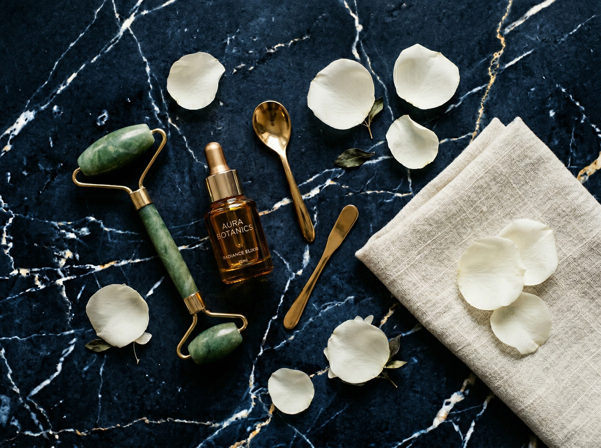

A evolução e o gerenciamento do seu envelhecimento podem caminhar a favor do tempo.
O protocolo que reconstrói estrutura, estimula biologia e respeita quem você é.
Quero conhecer o métodoO tempo não é o vilão.
A maioria dos tratamentos de harmonização facial luta contra o envelhecimento. Preenche sem planejar, corrige sem entender, promete sem respeitar.
O resultado? Rostos que perdem identidade.
O Método NaturalUp® parte de uma premissa diferente: o envelhecimento pode ser gerenciado. Com inteligência, estrutura e ciência.

Como funciona o NaturalUp®
Cinco pilares integrados que trabalham em sinergia, respeitando a biologia do seu rosto.
Suporte Estrutural
Radiesse Plus para devolver a base que o tempo reabsorveu. A fundação de um rosto bem sustentado.
Estimulação Global
Radiesse Duo para reativar a produção natural de colágeno em todo o rosto. Biologia trabalhando a seu favor.
Protocolo de Toxina
Aplicação estratégica para equilíbrio muscular, não para congelar. Para devolver harmonia ao movimento.
Preenchimento Direcionado
Apenas onde é necessário. Sem excessos, sem pedidos que comprometam o resultado natural.
Regeneração Tecidual
Materiais autólogos e regenerativos que ativam a capacidade natural do seu corpo de se reparar. Biologia a seu favor.
Cada protocolo é personalizado. Não existe NaturalUp® genérico.
O tempo deixa de ser vilão dos seus procedimentos e passa a ser o maior aliado.
O NaturalUp® não é um tratamento conservador. É um tratamento inteligente. Cada etapa segue um planejamento de rosto completo, não uma lista de desejos. O resultado é um rosto que parece descansado, saudável, e seu.
O NaturalUp® é para você se...
Quer envelhecer bem
Um rosto que evolua com você, não contra você.
Já tentou e se frustrou
Quer recomeçar com responsabilidade e resultado natural.
Valoriza ciência e planejamento
Transparência e método são prioridade.
Criador do Método NaturalUp®
Dr. Gustavo Martins
Cirurgião-Dentista e Biomédico. Mestre, Especialista em Harmonização Facial e Especialista em Odontogeriatria. Speaker e Palestrante Internacional Merz Aesthetics. Professor de pós-graduação. Membro da Academia Brasileira de Cirurgias Estéticas da Face. Criador do Método NaturalUp®.
Resultados que falam por si
Estou em tratamento com o Dr. Gustavo há aproximadamente quatro anos. As manutenções que faço não são para refazer tudo do zero. São para melhorar ainda mais o resultado dos procedimentos que já venho fazendo ao longo do tempo. Percebo que é realmente um tratamento, ao invés de uma maquiagem, como eram os outros procedimentos que eu fazia antes.
Já tinha feito harmonização antes e não gostei. Com o Dr. Gustavo foi diferente: ele explicou cada etapa, respeitou meus limites e o resultado ficou exatamente como eu sou. Só melhor.
O que mais me impressionou foi a honestidade. Ele disse o que não deveria ser feito antes de dizer o que seria feito. Isso me deu uma confiança que nunca tive com outro profissional.
Casos reais com Método NaturalUp®
Evoluções clínicas de pacientes em acompanhamento contínuo. Resultados que melhoram com o tempo.


Passe o mouse para pausar a rolagem
Pronto para caminhar a favor do tempo?
Agende uma avaliação e descubra como o NaturalUp® pode funcionar para o seu rosto.
Agendar minha avaliação